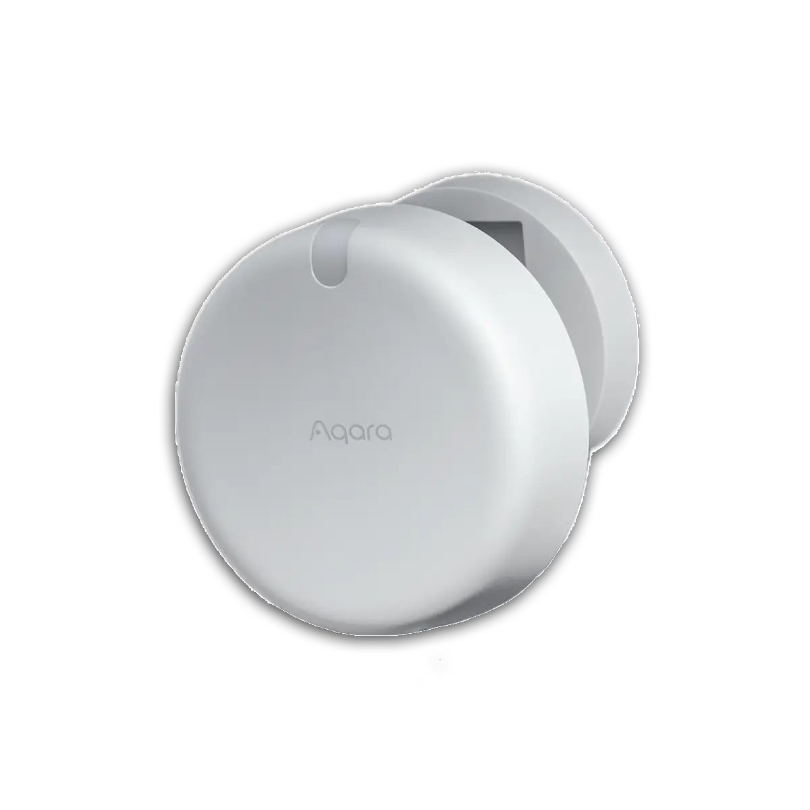
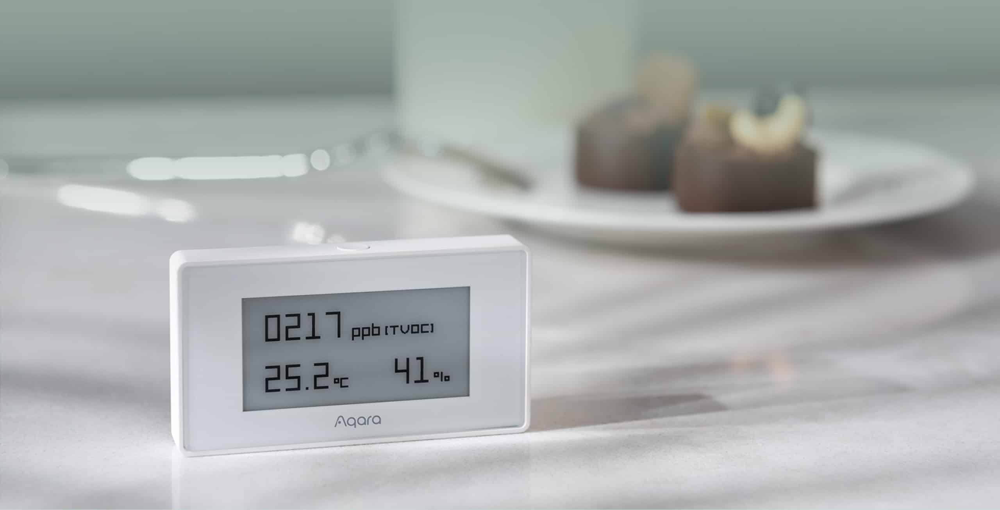
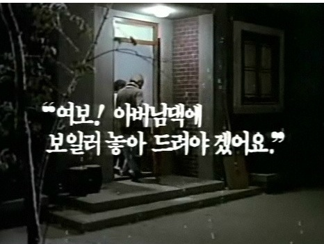

TABSPACE × 경희대 주거환경학과
공간을 읽는 기술,
IoT
스마트 공간 설계의 현장과 데이터
ABOUT TABSPACE
TABSPACE
IoT 공간 솔루션 전문 — 200개+ 프로젝트 구축 경험
🏠
주거 공간
아파트, 빌라, 단독주택
일반 가정의 스마트화
☕
상업 공간
카페, 음식점, 소매점
매장 자동화 솔루션
⚡
산업 시설
공장, 발전소, 연구소
IoT 모니터링 시스템
🏛️
공공 시설
복지/요양원, 스마트쉘터
공공 인프라 연동
TODAY'S TOPICS
오늘 함께 나눌 3가지 이야기
🔬
센서 종류 및 설계 전략
공간이 스마트해지려면
무엇이 필요한가
📊
히트맵 기반 행동 분석
데이터가 말하는
공간 사용법
🤝
요양복지시설 IoT 설계
기술이 따뜻해지는 순간
01
공간이 스마트해지려면
센서는 공간의 감각기관입니다
FIELD PERSPECTIVE
스마트 공간이란?
잠깐 — 오늘 아침에 스위치를 몇 번 누르셨나요?
공간이 사용자를 인지하고, 스스로 반응하는 것
※ 30평 아파트 2인 가구 기준 — 조명 ~20회, 온도 ~5회, 환기 ~7회, 출입 ~3회 (TABSPACE 내부 측정)
SENSOR OVERVIEW
센서 종류 총정리
👁️
모션 센서
PIR / mmWave
재실 감지, 동선 파악
🌡️
온습도 센서
실내 환경 쾌적성
냉난방 자동화
☀️
조도 센서
빛의 밝기 측정
조명 자동 제어
💨
공기질 센서
CO2 / PM2.5
환기 자동화
MOTION SENSOR
모션센서 — 재실 감지의 핵심

mmWave (레이더)
👁️ PIR vs mmWave
PIR: 적외선 열 감지 / 120° 부채꼴 / ₩3,000~
→ 움직임만 감지, 정지 시 OFF
mmWave: 밀리미터파 레이더 / ₩15,000~
→ 호흡까지 감지, 정지 상태도 OK
⚠️ 설치 높이 2.2~2.4m가 골든존
10cm 차이로 감지 실패율 40% 변동
현장 인사이트
🏠 거실/복도 → PIR 충분 (움직임 기반)
🚿 화장실 → mmWave 필수 (정지 감지)
👴 고령자 낙상 감지 → mmWave 유일한 선택
📊 200개 현장 기준 PIR:mmWave = 7:3 비율
😅
"보기 싫다고 가리시면..." — 고객이 센서 위에 조화를 올려놓으셔서 3개월간 데이터가 0. 센서는 시야가 생명입니다.
MOTION SENSOR — APPLICATIONS
모션센서 응용 자동화
💡 재실 기반 조명
방에 들어가면 자동 점등
5분 부재 시 자동 소등 (에너지 23%↓)
🌬️ 에어컨 방향 전환
mmWave로 사람 위치 감지 →
에어컨 바람 방향 자동 추적
😴 수면 감지 자동화
mmWave 호흡 패턴 감지 →
조명 서서히 OFF + 에어컨 수면모드
🏠 빈 방 자동 절전
전 방 모션센서 연동 →
비어있는 방 조명·난방 자동 차단
모션센서 하나로: 조명 자동화 + 냉난방 최적화 + 수면 관리 + 에너지 절감 — 가장 활용도 높은 센서
ENVIRONMENTAL SENSOR
환경 센서 — 보이지 않는 것을 측정

TVOC / PM2.5
🌡️
온습도
쾌적 범위: 22~26°C
습도 40~60%
💨
CO2
1000ppm 이상 시
집중력 저하, 졸음
환경 데이터 수집
→
임계값 판단
→
환기 자동화
→
쾌적성 향상
고객 불만 1위는 온도(38%), 2위는 습도(27%), 3위는 냄새(CO2, 22%) — 이 세 가지만 잡으면 민원의 87%가 사라집니다
ENVIRONMENTAL — APPLICATIONS
환경센서 응용 자동화
🌡️ 존별 냉난방
방마다 온습도 센서 → 거실 26°C,
안방 24°C 독립 제어
💧 결로 방지
습도 70% + 외벽 온도차 감지 →
제습기 자동 ON (겨울철 필수)
🌱 식물 관리
습도 40% 이하 →
가습기 자동 가동 + 식물 관수
🔥 보일러 예열
퇴근 30분 전 온도 확인 →
18°C 이하면 보일러 자동 ON
환경센서 하나로: 쾌적함(온도) + 건강(습도) + 에너지 절감(불필요 냉난방 차단) 동시 해결
DOOR SENSOR
도어센서 — 가장 정직한 데이터
🚪 자석 감지 방식
문이 열리면 ON, 닫히면 OFF
가장 단순하지만 가장 확실한 데이터
₩5,000~15,000 / 배터리 1~2년
설치 위치: 현관, 화장실, 냉장고, 창문
현장 인사이트
🏠 현관 도어센서 하나로 외출/귀가 자동화 완성
🚿 화장실 문 × 모션센서 = 재실 정확도 99%
🧊 냉장고 문 30초 이상 → 알림 (실제 수요 많음)
📊 개폐 횟수 = 생활 패턴의 가장 기본 지표
🔋
현장 경험 — 배터리 교체 주기를 안내하지 않으면 "고장났다"고 민원이 옵니다. 설치 시 교체 일정표를 꼭 드리세요.
DOOR SENSOR — APPLICATIONS
도어센서 응용 자동화
❄️ 에어컨 동작 확인
바람 날개에 도어센서 부착 →
실제 가동 여부 확인 (리모컨 신호 ≠ 동작)
🪟 창문 + 에어컨 연동
창문 열림 감지 → 에어컨 자동 OFF
닫히면 자동 ON (에너지 30% 절감)
🚪 현관 외출 모드
현관문 닫힘 + 5분 모션 없음 →
전등 OFF, 에어컨 OFF, 보안 ON
📬 우편함 알림
우편함 도어센서 → 개폐 감지 →
택배 도착 푸시 알림
도어센서의 진짜 가치: "문"이 아니라 "움직이는 모든 것"에 붙일 수 있습니다 — 에어컨, 우편함, 서랍, 약통
LIGHT SENSOR
조도센서 — 빛을 읽는 눈
☀️ 빛의 밝기 측정 (lux)
자연광 유입량에 따라 조명 자동 조절
커튼/블라인드 자동화의 핵심 트리거
₩3,000~10,000
적정 조도: 거실 150~300lux, 서재 400~600lux
현장 인사이트
🌅 오후 3시 서향 거실 → 눈부심 자동 차단
🌙 야간 복도 최소 조도 유지 (고령자 안전)
💡 "조명이 너무 밝다/어둡다" 민원 해결의 핵심
📊 자연광 패턴 = 계절별 에너지 소비 예측 가능
고령자 주거에서 야간 조도 관리는 낙상 예방의 첫 번째 단계입니다 — 화장실 동선에 최소 30lux 유지
LIGHT SENSOR — APPLICATIONS
조도센서 응용 자동화
🪟 전동 블라인드 연동
일사량 500lux 초과 →
블라인드 자동 내림 (서향 오후)
🌙 야간 동선 조명
조도 10lux 이하 + 모션 감지 →
발밑 간접조명 30% 점등
🎬 영화 모드
TV ON + 조도 급감 감지 →
간접조명만 남기고 전체 소등
☀️ 일출 기상 모드
자연광 감지 → 조명 서서히 밝아짐
알람 없이 자연스러운 기상
조도센서의 가치: 에너지 절감(불필요 조명 OFF) + 쾌적함(눈부심 자동 차단) + 안전(야간 낙상 방지)
AIR QUALITY SENSOR
공기질센서 — 보이지 않는 위험
💨 CO2 + PM2.5 + VOC
CO2: 1,000ppm 초과 → 집중력 23% 저하
PM2.5: 35㎍/㎥ 초과 → 호흡기 영향
VOC: 새집증후군, 가구 방출 가스 감지
₩20,000~50,000 / 전원 필요 (USB)
환기 자동화의 필수 조건
현장 인사이트
🍳 주방 요리 시작 3분 후 CO2 2배 상승
😴 침실 밀폐 취침 → 새벽 3시 CO2 1,500ppm
🏢 회의실/강의실이 가장 빠르게 악화
📊 환기 타이밍 자동화 = 에너지 18% 절감
😮
놀라운 사실 — 대부분의 가정 침실은 새벽에 CO2 1,200~1,800ppm. "아침에 머리가 무거운 이유"가 여기 있습니다.
AIR QUALITY — APPLICATIONS
공기질센서 응용 자동화
🍳 주방 연동
요리 시작 → CO2/연기 감지 →
환풍기 자동 ON + 창문 환기
😴 수면 환기
침실 CO2 1,000ppm 초과 →
전열교환기 자동 가동 (소음 최소)
🏢 회의실 알림
CO2 1,500ppm → "환기 필요" 알림
회의실 디스플레이에 실시간 표시
🏠 새집 모니터링
VOC(포름알데히드) 감지 →
입주 전 베이크아웃 자동 관리
공기질 자동화의 핵심: "사람이 느끼기 전에 기계가 먼저 반응" — CO2는 냄새가 없습니다
POWER SENSOR
전력센서 — 생활의 지문
🔌 스마트 플러그 / CT 센서
개별 가전 전력 소비 실시간 측정
대기전력 차단 자동화
₩10,000~25,000
전력 패턴 = 재실 여부의 가장 정확한 간접 지표
현장 인사이트
📺 TV 전력 패턴 = 기상/취침 시간 정확 추정
🍚 밥솥 사용 패턴 = 식사 규칙성 모니터링
⚡ 전기요금 피크 시간대 자동 부하 분산
👴 독거 어르신 — 전력 사용 0 → 안부 확인 트리거
🔌 독거 어르신 댁의 전력 패턴이 평소와 다르면 자동으로 보호자에게 알림 — 가장 비침습적인 안부 확인
POWER SENSOR — APPLICATIONS
전력센서 응용 자동화
🧊 냉장고 고장 예측
전력 패턴이 평소와 다르면 → 컴프레서 이상 경고
고장 나기 전에 AS 예약
⚡ 피크타임 부하 분산
전기요금 피크 시간대 감지 →
세탁기·건조기 자동 지연 가동
👴 안부 확인 자동화
독거 어르신 TV·밥솥 전력 패턴 →
24시간 미사용 시 보호자 알림
🔌 대기전력 차단
외출 감지 → 불필요 대기전력 자동 OFF
연간 전기료 8~12만원 절감
전력 데이터는 "생활의 지문" — 가전 사용 패턴만으로 기상·식사·취침 시간을 알 수 있습니다
DESIGN PRINCIPLES
센서 설계 3원칙
📍
WHERE
어디에 설치할 것인가
공간의 용도와 동선 분석
🔢
HOW MANY
몇 개를 설치할 것인가
과다 = 비용 낭비,
과소 = 사각지대
DESIGN STRATEGY
200개 현장에서 배운 설계 전략 3가지
① 전원 먼저
현장 문제의 70%가 전원(N선) 누락
스마트 스위치에는 N선이 필수
구형 배선에 없으면 → 벽 뜯기 +200만원
설계 단계에서 "N선" 한 마디면 해결
② 통신 설계
WiFi는 벽 2개 지나면 신호 50%↓
Zigbee/BLE는 허브 위치가 핵심
금속 천장 = 무선 사각지대
허브 1개의 위치가 전체 안정성 결정
③ 사용자 동선
센서 위치 = 사용자 동선의 교차점
현관→복도→거실 분기점이 핵심
화장실 입구 + 내부 = 2중 감지
동선을 아는 사람이 최적 배치 가능
전원 · 통신 · 동선 — 이 3가지를 설계 단계에서 잡으면 현장 문제의 90%가 사라집니다
WHAT MAKES SPACE SMART
공간이 스마트해지려면 3가지가 필요합니다
지금까지 '감지'를 이야기했습니다 — 다음은 '판단', 데이터가 말하는 것들입니다
SCENARIO-BASED DESIGN
공간 유형별 센서 조합
| 공간 유형 |
모션 |
도어 |
온습도 |
조도 |
공기질 |
전력 |
핵심 시나리오 |
| 원룸 |
1~2개 |
현관 |
1개 |
- |
- |
1개 |
외출/귀가 자동화 |
| 아파트 |
3~5개 |
현관+방 |
2~3개 |
1개 |
1개 |
2~3개 |
존별 자동 조명/냉난방 |
| 복층 |
4~6개 |
현관+각층 |
층별 |
1~2개 |
층별 |
3~4개 |
층별 독립 제어 |
| 상가 |
2~4개 |
출입구 |
1개 |
1~2개 |
1개 |
전체 |
영업시간 기반 자동화 |
| 고령자 주거 |
3~5개 |
현관+화장실 |
2~3개 |
1개 |
1개 |
2~3개 |
낙상 감지 + 재실 모니터링 |
CHAPTER 1 SUMMARY
센서는 공간에 감각을 부여합니다
6종
모션 · 환경 · 도어
조도 · 공기질 · 전력
센서가 수집한 데이터로 무엇을 알 수 있을까요?
다음은 데이터가 말하는 공간 사용법입니다
02
데이터가 말하는 공간 사용법
센서 데이터 → 행동 패턴 → 공간 인사이트
HEATMAP
히트맵이란?
현장에서 수집한 센서 데이터를 시각화하는 방법
전통적 행동 관찰
설문, 관찰법, 인터뷰
시간·비용 소요, 표본 제한
IoT 데이터 히트맵
연속적, 비침습적, 대규모
자동 수집 + 실시간 분석
RESIDENTIAL HEATMAP
주거 공간 히트맵 예시
30평형 아파트 모션센서 데이터 기반 — 2인 가구 30일 평균
활동 밀도 범례
저빈도고빈도
발견한 패턴
🔴 거실 6.2h — 1인가구는 4.1h
🟣 안방 야간 7.5h (23~07시)
🟠 주방 2.1h — 겨울엔 2.8h로↑
🟢 작은방: 주말에만 활성화
💡 같은 30평이라도 1인/2인 가구의
공간 사용이 완전히 다릅니다
TIME-BASED PATTERN
시간대별 공간 사용 패턴
☀️ 6~9시
아침
침실→욕실→주방
일정한 기상 패턴
조명 점진 밝기 증가
🏢 9~18시
낮
외출 상태
무인 모드
에너지 절약 자동화
🌆 18~23시
저녁
현관→거실→주방
활동 최고 밀도
조명/온도 최적화
🌙 23~6시
야간
거실→욕실→침실
취침 패턴
수면 환경 자동 전환
모든 사용자에게 고유한 시간대별 패턴이 존재하며, 이것이 자동화의 기반이 됩니다
BEHAVIORAL INSIGHTS
200개 현장에서 반복적으로 나타난 행동 특징 5가지
- 💡 퇴근 후 15분 내 조명 패턴 고정 92%의 사용자
- 🌙 취침 시간 ±30분 이내로 일정 주중 편차 23분
- 📅 주말 거실 체류 시간 평일 대비 2.3배 동선 완전 변화
- 🌡️ 환절기 창문 개폐 횟수 3배 증가 환경 적응 패턴
- 👥 손님 방문 시 현관 센서 ×4, 거실 ×2.5 이상 탐지 트리거
DATA PIPELINE
센서 데이터 → 인사이트 변환
👁️ 모션 로그
🚪 도어 로그
🌡️ 환경 로그
🔌 전력 로그
↓ 수집
데이터 정제 + 시계열 분석
↓ 분석
재실 시간 / 공간별 체류 분포
↓ 시각화
UNEXPECTED PATTERNS
데이터가 발견한 의외의 패턴
🛋️ "안 쓰는 방"이 건강 지표
평소 작은방 사용률 → 갑자기 증가 → 부부 갈등 or 재택근무 시작 신호
73% 적중
🌡️ 에어컨 설정 온도 ≠ 실제 쾌적 온도
고객이 24°C로 설정해도 실제 쾌적 체감은 25.5°C — 센서 위치(벽 vs 생활 영역)의 차이
1.5°C 편차
🚪 현관문 패턴으로 직업 추정 가능
출퇴근 시간 고정 → 회사원, 불규칙 → 자영업/프리랜서, 오전 고정 → 학생
패턴 3유형
💡 야간 화장실 빈도 = 건강 경고
야간 기상 횟수가 주 평균 대비 2배 이상 → 비뇨기 or 수면 장애 조기 발견 가능
조기 발견
센서 데이터는 "자동화"만을 위한 것이 아닙니다 — 공간이 사용자의 삶을 이야기합니다
SAME SPACE, DIFFERENT LIVES
같은 30평 아파트, 완전히 다른 사용법
👨👩👧 A가구 — 맞벌이 부부 + 아이
🏠 거실 체류 4.1h (아이 중심)
🍳 주방 피크: 07시, 18시 (식사 준비)
🚪 현관: 07:20, 08:10, 18:40 고정
💡 22시 전 전체 소등 (조기 취침)
🌡️ 난방 25°C 고정 (아이 기준)
👤 B가구 — 1인 재택근무자
🏠 거실 체류 8.7h (근무+여가 통합)
🍳 주방 피크: 13시 단일 (간편식)
🚪 현관: 불규칙 (택배·산책 위주)
💡 02시까지 거실 조명 ON
🌡️ 존별 차등 (거실 24°C, 나머지 OFF)
같은 평면도라도 사용자에 따라 공간 활용이 완전히 다릅니다 — "표준 설계"의 한계를 데이터가 보여줍니다
COMMERCIAL HEATMAP
카페 좌석 선호도 히트맵
25석 카페 모션센서 데이터 기반 — 영업일 60일 평균
🛋️ 소파석 (4인)
67% / 체류 2.3h
📖 스터디존 (1인×4)
45% / 체류 3.1h 최장
데이터가 발견한 인사이트
1. 창가석 점유율 압도적 — 자연광 선호
2. 소파석 체류 시간 최장 → 회전율 저하
3. 스터디존 1인 고객 집중 (노트북 작업)
4. 바 좌석 활용도 최하 → 개선 필요
좌석 4개를 옮겼을 뿐인데
월 매출 +120만원
바 좌석 → 창가 확장 (12%↑)
이 방법론은 카페뿐 아니라 주거 공간, 복지시설, 어떤 공간이든 동일하게 적용됩니다
DATA-DRIVEN DECISIONS
데이터가 바꾼 비즈니스 결정 3가지
☕ 카페 — "2층을 폐쇄하겠습니다"
사장님은 2층 점유율이 낮아서 폐쇄를 고려. 데이터를 보니 2층은 14~17시에만 폭발적(노트북 작업자).
→ 2층을 "집중존"으로 리브랜딩 → 콘센트 추가 → 오후 매출 38%↑
🏢 공유오피스 — "회의실이 부족해요"
예약률 90%라 회의실 추가 검토. 실제 사용 데이터 → 예약 후 미사용(no-show) 35%.
→ 회의실 추가 대신 30분 미사용 시 자동 해제 → 체감 가용률 2배↑
🏠 모델하우스 — "거실이 가장 인기 있습니다"
방문객 동선 데이터 → 실제 체류 1위는 주방(평균 4.2분), 거실은 2위(2.8분).
→ 주방 쇼케이스 강화 + 주방 앞 상담석 배치 → 계약 전환율 15%↑
"감"이 아닌 "데이터"로 결정하면 — 폐쇄할 공간이 매출 공간이 되고, 추가 투자 없이 문제가 풀립니다
ENERGY INSIGHTS
에너지 데이터가 발견한 낭비 패턴
🔥 발견된 낭비 TOP 4
❌ 외출 후 에어컨 3시간 가동 — 42%의 가구
❌ 빈 방 조명 켜짐 — 하루 평균 4.2시간
❌ 새벽 TV 대기전력 — 월 3,200원/대
❌ 창문 열린 채 난방 — 겨울 18%의 세대
💡 자동화 적용 후
✅ 외출 감지 → 에어컨 자동 OFF — 월 2.1만원 절감
✅ 재실 기반 조명 → 빈 방 자동 소등 — 23% 절감
✅ 대기전력 자동 차단 — 연 8~12만원
✅ 도어센서+난방 연동 — 난방비 15% 절감
200개 현장 평균: IoT 도입 후 에너지 비용 월 3.5만원 절감 — 연간 42만원, 투자 회수 기간 8~14개월
FIELD DATA
현장 데이터가 보여주는 것들
200개 현장에서 쌓인 것
📡 24시간 연속 수집된 행동 데이터
🔇 사용자가 의식하지 못하는 자연스러운 기록
📈 수개월~수년 단위 장기 데이터
🤖 반복 패턴, 이상 징후 자동 감지
현장에서는 이 데이터를
'읽을 줄 아는 사람'이 부족합니다
데이터가 말해주는 것
🏠 공간별 실제 사용 빈도와 체류 시간
👤 거주자의 무의식적 행동 패턴
🌡️ 환경 변화에 대한 실제 반응
⚠️ 설계 의도와 실제 사용의 괴리
이 데이터를 해석하는 건 여러분의 전문 영역입니다
"설계 의도대로 공간이 쓰이고 있는가?"
— 이 질문에 답할 수 있는 데이터가 현장에 있습니다
DATA vs ASSUMPTION
데이터가 뒤집어 놓은 설계 상식 5가지
❌ 거실은 TV 보는 공간이다
→
✅ 재택근무 후 거실=사무실 (체류 62%↑)
❌ 작은방은 서재/취미실이다
→
✅ 실제론 창고+가끔 낮잠방 (주중 사용률 8%)
❌ 주방은 요리할 때만 쓴다
→
✅ 1인 가구 주방 체류 = 식사+폰+대화 (복합 공간)
❌ 화장실은 단시간 사용이다
→
✅ 고령자 평균 체류 12분 (젊은층의 3배)
❌ 현관은 출입만 하는 곳이다
→
✅ 택배·분리수거·통화 공간 (1일 평균 7회 활성)
설계자의 의도와 거주자의 실제 행동 사이의 괴리 — 이 간극을 메울 수 있는 건 데이터뿐입니다
FOR HOUSING & INTERIOR
현장에서는 이 데이터를 해석할 수 있는 전문가가 부족합니다
현장의 현실
📡 센서 데이터는 쌓이는데
📊 해석할 사람이 없습니다
🏗️ 엔지니어는 설치만 합니다
🏠 공간을 아는 사람이 읽어야 합니다
여러분의 전문성
🏠 공간의 맥락을 이해하고
👤 사용자의 행태를 알고
📐 설계에 반영할 수 있는
🎯 바로 그 역할을 할 수 있습니다
📊 현장 데이터와 공간 전문성의 만남 — 여러분이 그 다리가 될 수 있습니다
UNANSWERED QUESTIONS
현장에서 답을 못 찾고 있는 질문들
200개 현장의 데이터는 있는데, 해석할 프레임이 없습니다
- 🏠 같은 평수인데 왜 거실 체류가 6시간 vs 2시간인가? 가구 구성? 평면 구조?
- 🚿 고령자 화장실 사용 패턴이 건강 지표가 될 수 있는가? 빈도·시간 변화
- 📐 설계 의도와 실제 사용의 괴리가 가장 큰 공간은? 작은방? 발코니?
- 🌡️ 계절별 행동 변화가 에너지 소비와 어떻게 연결되는가? 데이터는 있음
이 질문들에 답할 수 있는 사람은 공간을 이해하는 여러분입니다 — 현장의 인사이트는 언제든 나누겠습니다
FIELD HINTS — PART 1
현장에서 찾은 실마리 (1/2)
🏠 같은 평수, 왜 거실 체류가 다른가?
현장 데이터 힌트:
• 거실↔주방 연결 구조 (오픈형) → 체류 35%↑
• 거실 창 방향: 남향 > 동향 > 서향 (체류 차이 1.8h)
• 소파 위치가 TV 정면이면 체류↑, 측면이면 통과 공간화
→ 평면 구조 + 가구 배치 + 채광이 복합적으로 영향
🚿 화장실 패턴이 건강 지표가 될 수 있는가?
현장 데이터 힌트:
• 고령자 야간 화장실 평균 1.8회 → 3회 이상이면 이상 신호
• 체류 시간: 평균 7분 → 12분 이상 지속 시 낙상 위험↑
• 주간 대비 야간 빈도가 2배 → 비뇨기 질환 초기 증상
→ 의료진이 아닌 공간 데이터가 먼저 포착할 수 있는 영역
FIELD HINTS — PART 2
현장에서 찾은 실마리 (2/2)
📐 설계 의도와 괴리가 가장 큰 공간은?
현장 데이터 힌트:
• 1위: 작은방 — "서재"로 설계, 실제론 창고 (주중 8%)
• 2위: 발코니 — "힐링 공간"으로 설계, 실제론 건조대
• 3위: 거실 다이닝 — "식사 공간", 실제론 아이 놀이
→ 설계 의도가 맞는 곳: 안방(수면), 현관(출입) — 단일 기능 공간
🌡️ 계절별 행동 변화 → 에너지 연결?
현장 데이터 힌트:
• 환절기(3~4월, 10~11월) 창문 개폐 3배 + 에너지 낭비 피크
• 여름: 거실 체류↓ 안방 체류↑ (에어컨이 있는 방으로 이동)
• 겨울: 주방 체류 28%↑ (따뜻한 공간에 모임)
→ 계절별 동선 변화 = 냉난방 존 설계의 핵심 근거
이 힌트들은 200개 현장의 패턴입니다 — 여러분의 전문성으로 해석하면 연구가 됩니다
03
돌봄 공간의 IoT
기술이 따뜻해지는 순간
"아버님 댁에 IoT 놓아 드려야겠어요"

AGING SOCIETY
고령화 시대의 공간 과제
20.6%
65세 이상 인구 비율 (2025)
대한민국은 이미 초고령사회에 진입했습니다 (2025년)
이 분야에서 IoT 설계 의뢰가 최근 급증하고 있습니다 — 사람을 돕는 기술에 대한 수요입니다
2025 스마트 요양원 시범사업 확대 · IoT 돌봄 수가 인정 추진 · 노인장기요양보험 기술 연동 — 정부도 움직이고 있습니다
REAL REQUESTS
실제 요청 사례 3가지
📍
어르신 위치 추적
의뢰: 요양원 원장님
"치매 어르신이 새벽에 나가시는 걸
직원이 모를 때가 있어요"
→ 비콘 이탈 감지 구축
결과: 야간 이탈 사고 0건 (6개월)
🚨
낙상/비상 감지
의뢰: 독거 어르신 자녀분
"화장실에서 넘어지셨는데
3시간 뒤에야 발견됐어요"
→ mmWave + 즉시 알림
결과: 발견 시간 3시간→8분
🌡️
환경 모니터링
의뢰: 복지관 시설담당자
"여름에 냉방 꺼놓고 계시다가
온열질환 오신 분이 있어요"
→ 온도 임계 알림 + 자동 냉방
결과: 온열질환 발생 0건 (여름)
낙상 후 발견까지
3시간
화장실에서 넘어지셨는데, 아무도 몰랐습니다
BEACON TECHNOLOGY
비콘(Beacon)이란?
BLE(Bluetooth Low Energy) 기반 소형 송신기
📡 비콘
BLE 신호 송출
📡 비콘
BLE 신호 송출
📡 비콘
BLE 신호 송출
↓ 신호 수신
🔗 수신기(게이트웨이)
↓ RSSI 분석
🖥️ 위치 계산 서버
TECHNOLOGY COMPARISON
실내 위치 측위 기술 비교
| 항목 |
BLE 비콘 |
UWB |
WiFi 핑거프린팅 |
| 정밀도 |
1~3m |
10~30cm |
3~5m |
| 비용 (개당) |
₩5K~20K |
₩50K~100K |
기존 AP 활용 |
| 설치 난이도 |
매우 쉬움 |
보통 |
사전 측정 필요 |
| 배터리 수명 |
1~3년 |
6개월~1년 |
전원 필요 |
| 적합 환경 |
요양원, 복지관 |
물류, 의료 |
대형 건물 |
현재는 BLE 비콘이 가장 현실적 — 단, UWB 가격이 매년 30%씩 하락 중. 2~3년 내 판도가 바뀔 수 있습니다
SYSTEM ARCHITECTURE
요양원 IoT 시스템 구조
DEVICE LAYER
📡 BLE 비콘
👁️ 모션센서
🚪 도어센서
🌡️ 온습도센서
🔘 비상벨
↓
NETWORK LAYER
↓
SERVER + AI LAYER
🖥️ 로컬 서버 (위치 계산 + 데이터 저장)
🤖 AI 행동 예측 (2025~)
↓
APPLICATION LAYER
📱 관리자 대시보드
👨👩👧 보호자 앱
🚨 비상 알림 시스템
CARE SCENARIOS
돌봄 시나리오 설계
🚶
배회 감지
출입구 비콘 감지
→
허용 구역 이탈 판단
→
이탈 알림 발송
→
실시간 위치 추적
⚠️
낙상 감지
화장실 mmWave
→
5분 이상 움직임 없음
→
비상 알림 + 보호자 통보
→
간호사 즉시 출동
🤖
낙상 예측
보행 패턴 AI 분석
→
보폭·속도 변화 감지
→
고위험 사전 알림
→
예방 조치 (보행 보조)
🌡️
환경 제어
온습도/CO2 측정
→
쾌적 범위 이탈 판단
→
냉난방 자동 조절
→
환기 자동 실행
현재: 감지→알림 8초. 다음 단계: AI가 넘어지기 "전에" 예측 — 감지에서 예측으로 진화 중
2025-2026 TRENDS
요양시설 IoT — 지금 바뀌고 있는 것들
🤖
AI 행동 예측
보행 패턴 변화로
낙상 48시간 전 예측
📡
엠비언트 센싱
웨어러블 없이
호흡·심박 비접촉 측정
🏥
디지털 트윈
시설 전체를 가상 복제
실시간 모니터링 + 시뮬레이션
🏛️
정부 수가 인정
스마트 요양원 인증제
IoT 돌봄 보험 수가 추진
일본 개호보험 IoT 수가 인정 완료 · EU AAL 프로그램 10년차 — 한국은 지금 시작. 기준을 만들 기회입니다
FIELD DILEMMA
존엄성 vs 안전 — 현장의 딜레마
안전을 위해 감시해야 하는가
🚨 치매 어르신 배회 → 위치 추적 필수
📹 카메라를 달면 안전하지만 존엄성 침해
🔔 센서만으로는 낙상 오탐이 잦음
👤 "나를 감시하지 마" — 실제로 센서를 떼시는 분도 계심
현장에서 찾은 타협점
🔇 카메라 대신 모션센서 → 존재만 감지
📍 위치는 '구역' 단위로만 파악 (정밀 추적 X)
⚙️ 본인이 끌 수 있는 선택권 부여
🤝 "감시가 아니라 연결" — 가족과의 안심 채널
⚖️
여러분이라면 어떻게 설계하시겠습니까? — 카메라 없이, 착용 거부하는 분에게, 안전을 보장하는 공간을
LESSONS LEARNED
현장에서 반드시 실패하는 4가지 패턴
- 🔒 "다 수집하면 되겠지" → 과다 수집 → 거부감 → 센서 철거 요청
- ✋ "보호자 동의면 충분하지" → 본인 미동의 → 센서 임의 제거
- 🛡️ "인터넷만 되면 되지" → 통신 장애 시 비상벨도 먹통
- 🔧 "설치하면 끝이지" → 배터리 방전 → 6개월 후 무용지물
🚨 이 4가지를 사전에 설계에 반영하면 실패 확률이 크게 줄어듭니다
FOR YOUR FUTURE
공간을 설계하시는 여러분이
기술을 이해하면,
현장에서 통역자가 됩니다
설계자와 엔지니어는 서로 다른 언어를 씁니다
🏗️
설계자
"이 공간은 이렇게
사용되어야 해요"
←
→
저는 200개 현장에서 그 통역자를 기다렸습니다 — 오늘 이 자리에서 만난 것 같습니다
감사합니다
다음 슬라이드에 챕터 4 내용이 있습니다.
IoT 구축 사례 및 인사이트가 궁금하시면 아래 블로그로 방문해주세요.
TABSPACE × 경희대 주거환경학과
공간을 읽는 기술, IoT — 스마트 공간 설계의 현장과 데이터
04
인테리어 실무자를 위한 IoT 가이드
별지 — 관심 있으신 분은 읽어봐 주세요
SENSOR DESIGN
센서, 숨겨도 되는 것과 안 되는 것
숨겨도 되는 센서
🌡️ 온습도 — 공기 순환만 되면 OK
🚪 도어 — 문틀 안쪽에 매립 가능
🔌 전력 — 분전함 내부 설치
📡 비콘 — 천장 타일 위 설치 가능
절대 가리면 안 되는 센서
👁️ PIR 모션 — 시야각 확보 필수 (120°)
☀️ 조도 — 빛을 직접 받아야 함
🌫️ PM2.5 — 공기 흡입구 노출 필수
📹 mmWave — 전면 장애물 X
매립형
천장 깊이 5cm 이상 필요
사전 배선 필수
하이브리드
본체 매립 + 센서부 노출
가장 깔끔한 시공
MATERIAL COMPATIBILITY
마감재별 IoT 호환성 — 현장에서 겪은 것들
| 마감재 |
WiFi |
BLE/Zigbee |
모션(PIR) |
모션(mmWave) |
현장 메모 |
| 일반 벽지 |
통과 |
통과 |
통과 |
통과 |
문제 없음 |
| 금속 천장재 |
차단 |
차단 |
약화 |
차단 |
반드시 노출 설치 |
| 강화유리 |
통과 |
통과 |
감지불가 |
약화 |
유리 파티션 뒤 PIR 불가 |
| 대리석/타일 |
통과 |
통과 |
통과 |
통과 |
부착 방법만 주의 (접착) |
| 두꺼운 몰딩 |
통과 |
통과 |
시야각↓ |
시야각↓ |
몰딩 뒤 설치 시 각도 제한 |
🚨 금속 마감재 + 무선 센서 = 현장에서 가장 많이 실패하는 조합입니다
CONSTRUCTION TIMELINE
인테리어 공정별 IoT 시공 체크리스트
① 철거/배선
N선 확보
센서 전원 위치 확정
매립형 센서 박스 설치
② 목공/천장
천장 매립 센서 홀 가공
스위치 박스 위치 확인
통신 허브 위치 확보
③ 도배/마감
스마트 스위치 설치
매립 센서 마감 처리
도배 전 배선 최종 확인
④ 가구 입주 후
무선 센서 부착
모션센서 각도 조정
최종 테스트 + 세팅
💡
①②를 놓치면 ③④에서 벽을 뜯어야 합니다 — 인테리어 업체와 IoT 업체의 사전 미팅이 핵심
COST & MAINTENANCE
IoT 추가 비용 & 유지보수 가이드
평당 추가 비용 (기준)
🏠 기본형 (조명+모션) — 3~5만원/평
🏠 표준형 (+온습도+도어) — 7~10만원/평
🏠 프리미엄 (+공기질+전력) — 12~18만원/평
※ 30평 기준: 90만~540만원 추가
설계 단계 반영 시 시공비 50% 절감
유지보수 — 누가 하나?
🔧 배터리 교체 — 입주자 (6개월~3년)
📶 통신 장애 — IoT 업체 (원격 진단)
⚡ 전원/배선 — 인테리어 업체
🖥️ 소프트웨어 — IoT 업체 (자동 업데이트)
계약 시 AS 범위를 반드시 명문화하세요
SCENARIO-BASED AUTOMATION
센서가 만드는 자동화 시나리오
기본 모드
🚪 외출 모드
🌙 취침 모드
☀️ 기상 모드
🎬 영화 모드
✈️ 여행 모드
👋 손님 모드
냉난방/환경
🔥 보일러 예열
🪟 창문 열림 냉난방 OFF
🌬️ 실내 공기질 관리
💧 습도 기반 가습/제습
❄️ 온도 기반 에어컨
조명/안전
🏠 현관 도착 감지
🌤️ 조도 기반 자동 조명
🚶 재실 감지 조명
🚨 화재/가스 감지
🧊 냉장고 문 알림
🚰 침수/누수 감지
⚡ 전기요금 피크 대응
가전 연동
🌀 환풍기 자동화
👕 세탁/건조 완료 알림
🤖 로봇청소기 자동
🌱 식물 자동 관수
🌧️ 건조대 날씨 연동
🐕 반려동물 급식
출입/알림
📦 택배 도착 알림
🔔 스마트 도어벨
🛗 엘리베이터 호출
🚗 차량 출발 감지
👧 자녀 귀가 알림
🔐 도어락 귀가 연동
※ TABSPACE 실제 구축 시나리오 목록 — 고객 요청 빈도순 정렬